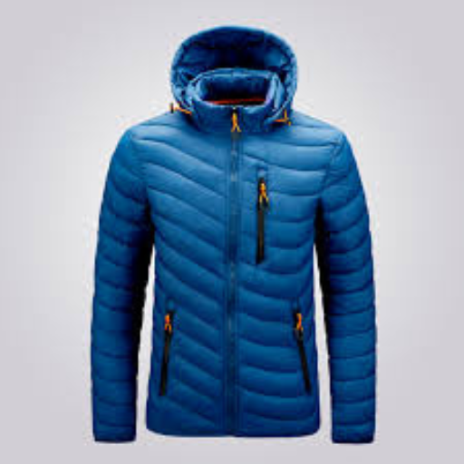
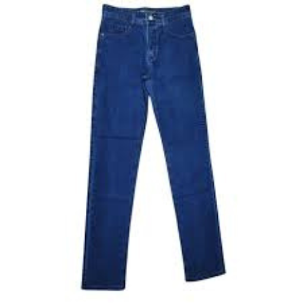
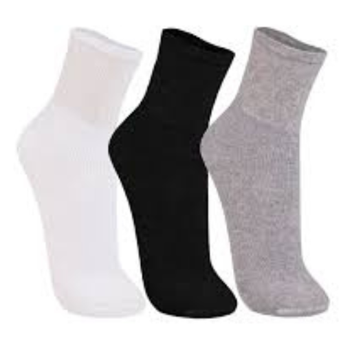
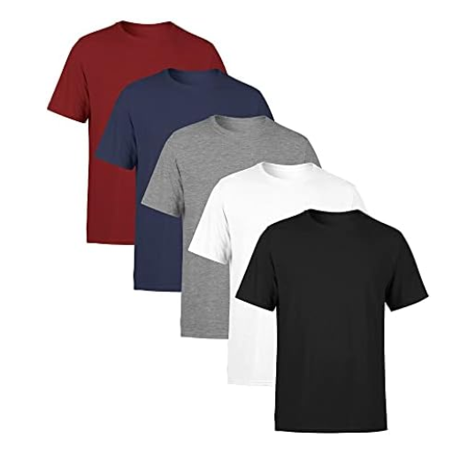

Sobre a Campanha
A organização e a estratégia de arrecadação serão responsabilidade dos docentes
referenciais, junto às suas turmas.
Quem pode participar:
Alunos do CAI, CT, Cursos Livres, funcionários da escola e membros da comunidade.Período de arrecadação:
De 08/04 até às 22h do dia 10/06/2025.Importante:
As roupas, agasalhos, mantas e cobertores doados devem estar limpos e em bom estado de conservação, prontos para uso.As roupas aceitas para a Campanha, eatarem logo abaixo:
Cobertores

Jaquetas

Calças

Meias

Camisetas
Não serão aceitas:
🚫Roupas íntimas
🚫Bolsas
🚫Gravatas
🚫Cintos
🚫Sapatos abertos
🚫Roupas sujas, mofadas ou rasgadas
Pontuação das doações:
-1 ponto: Camisa, camiseta, calça, bermuda, vestido, sapato fechado
-2 pontos: Agasalho (blusa de lã, casaco, moletom)
-5 pontos: Roupas novas, com etiqueta e embaladas
-10 pontos: Cobertores, mantas, edredons e colchas usados
-20 pontos: Cobertores, mantas, edredons e colchas novos
A contagem das peças doadas será feita pelo docente referencial e sua turma. Os números devem ser atualizados diretamente na planilha oficial, para acompanhamento da comissão e divulgação do gráfico de doações à comunidade escolar. Alunos dos Cursos Livres e funcionários da escola poderão colocar suas doações diretamente na caixa de arrecadação.
Premiação:
A AAPM da escola patrocinará a premiação para os alunos do CAI e CT da turma que alcançar a maior média de pontos por aluno.
Em caso de empate, será considerada vencedora a turma com o maior número de agasalhos doados.